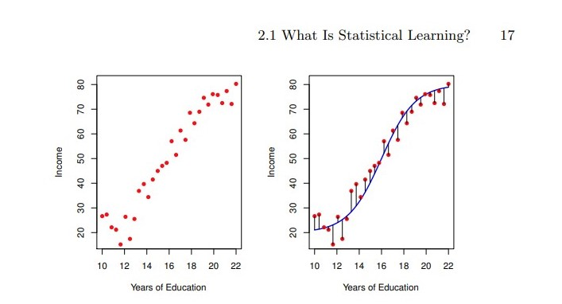
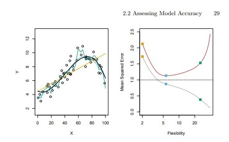

Notes
What is Statistical Learning?
In this chapter will deal with developing an accurate model that can be used to predict some value.
Notation:
- Input variables: \(X_1, \cdots, X_p\)
Also known as predictors, features, independent variables. - Output variable: \(Y\)
Also known as response or dependent variable.
We assume there is some relationship between \(Y\) and \(X = \left( X_1, \cdots, X_p \right)\), which we write as:
\[Y = f(X) + \epsilon\]
, where \(\epsilon\) is a random error term which is independent from \(X\) and has mean zero; and, \(f\) represents the systematic information that \(X\) provides about \(Y\) .
In essence, statistical learning deals with different approaches to estimate \(f\) .
Why estimate \(f\)?
Two main reasons to estimate \(f\):
Prediction
Predict \(Y\) using a set of inputs \(X\) .
Representation: \(\hat{Y}= \hat{f}(X)\), where \(\hat{f}\) represents our estimate for \(f\), and \(\hat{Y}\) our prediction for \(Y\) .*
In this setting, \(\hat{f}\) is often treated as a black-box, meaning we don’t mind not knowing the exact form of \(\hat{f}\), if it generates accurate predictions for \(Y\) .
\(\hat{Y}\)’s accuracy depends on:
- Reducible error
- Due to \(\hat{f}\) not being a perfect estimate for \(f\).
- Can be reduced by using a proper statistical learning technique.
- Irreducible error
- Due to \(\epsilon\) and its variability.
- \(\epsilon\) is independent from \(X\), so no matter how well we estimate \(f\), we can’t reduce this error.
- Reducible error
The quantity \(\epsilon\) may contain unmeasured variables useful for predicting \(Y\); or, may contain unmeasure variation, so no prediction model will be perfect.
Mathematical form, after choosing predictors \(X\) and an estimate \(\hat{f}\):
\[ E( Y - \hat{Y} )^2 = E(f(X) + \epsilon - \hat{f}(X))^2 = \underbrace{[f(X) - \hat{f}(X)]^2}_{reducible} + \underbrace{\text{ Var}(\epsilon)}_{irreducible}\; . \]
In practice, we almost always don’t know how \(\epsilon\)’s variability affects our model, so, in this boook, we will focus on techniques for estimating \(f\) .
Inference
In this case, we are interested in understanding the association between \(Y\) and \(X_1, \cdots, X_p\).
- For example:
- Which predictors are most associated with response?
- What is the relationship between the response and each predictor?
- Can such relationship be summarized via a linear equation, or is it more complex?
The exact form of \(\hat{f}\) is required.
Linear models allow for easier interpretability, but can lack in prediction accuracy; while, non-linear models can be more accurate, but less interpretable.
How do we estimate \(f\) ?
First, let’s agree on some conventions:
- \(n\) : Number of observations.
- \(x_{ij}\): Value of the \(j\text{th}\) predictor, for \(i\text{th}\) observation.
- \(y_i\) : Response variable for \(i\text{th}\) observation.
- Training data:
- Set of observations.
- Used to esmitate \(f\).
- \(\left\{ (x_1, y_1), \cdots, (x_n, y_n) \right\}\), where \(x_i = (x_{i1}, \cdots, x_{ip})^T\) .
Goal: Find a function \(\hat{f}\) such that \(Y\approx\hat{f}(X)\) for any observation \((X,Y)\) .
Most statistical methods for achieving this goal can be characterized as either parametric or non-parametric.
Parametric methods
Steps:
- Make an assumption about the form of \(f\).
It could be linear (\(f(X) = \beta_0 + \beta_1 X_1 + \cdot + \beta_p X_p,\) parameters \(\beta_0, \cdots, \beta_p\) to be estimated) or not. - The model has been selected.
Now, we need a procedure to fit the model using the training data.
The most common of such fitting procedures is called (ordinary) least squares.
- Make an assumption about the form of \(f\).
Via these steps, the problem of estimating \(f\) has been reduced to a problem of estimating a set of parameters.
We can make the models more flexible via considering a greater number of parameters, but, this can lead to overfitting the data, that is, following the errors/noise too closely, which will not yield accurate estimates of the response for observations outside of the original training data.
Non-parametric methods
- No assumptions about the form of \(f\) are made.
- Instead, we seek an estimate of \(f\) which that gets as close to the data point as possible.
- Has the potential to fit a wider range of possible forms for \(f\).
- Tipically requires a very large number of observations (compared to paramatric approach) in order to accurately estimate \(f\).
The trade-off between prediction accuracy and model interpretability
We’ve seen that parametric models are usually restrictive; and, non-parametric models, flexible. However:
- Restrictive models are usually more interpretable, so they are useful for inference.
- Flexible models can be difficult to interpret, due to the complexity of \(\hat{f}\).
Despite this, we will often obtain more accurate predictions usinf a less flexible method, due to the potential for overfitting the data in highly flexible models.
Supervised vs Unsupervised Learning
In supervised learning, we wish to fit a model that relates inputs/predictors to some output.
In unsupervised learning, we lack a reponse/variable to predict. Instead, we seek to understand the relationships between the variables or between the observations.
There are instances where a mix of such methods is required (semi-supervised learning problems), but such topic will not be covered in this book.
Regression vs Classification problems
- If the response is …
- Quantitative, then, it’s a regression problem.
- Categorical, then, it’s a classification problem.
- Most of the methods covered in this book can be applied regardless of the predictor variable type, but the categorical variables will require some pre-processing.
Assessing model accuracy
There is no best method for Statistical Learning, the method’s efficacy can depend on the data set.
For a specific data set, how do we select the best Statistics approach?
Measuring the quality of fit
The performance of a statistical learning method can be evaluated comparing the predictions of the model, with their true/real response.
Most commonly used measure for this:
- Mean squared error
- \(\text{ MSE } = \dfrac{1}{n}\displaystyle{ \sum_{i=1}^{n}(y_i - \hat{f}(x_i))^2 }\)
- Small MSE means that the predicted and the true responses are very close.
We want the model to accurately predict unseen data (testing data), not so much the training data, where the response is already known.
The best model will be the one which produces the lowest test MSE, not the lowest training MSE.
It’s not true that the model with lowest training MSE will also have the lowest test MSE.

- Fundamental property: For any data set and any statistical learning method used, as the flexibility of the statistical learning method increases:
- The training MSE decreases monotonically.
- The test MSE graph has a U-shape.
As model flexibility increases, training MSE will decrease, but the test MSE may not.
Small training MSE but big test MSE implies having overfitted the data.
Regardless of overfitting or not, we almost always expect \(\text{training MSE } < \text{ testing MSE }\), beacuse most statistical learning methods seek to minimize the training MSE.
Estimating test MSE is very difficult, usually because lack of data. Later in this book, we’ll discuss approaches to estimate the mininum point for the test MSE curve.
The Bias-Variance Trade-off
Definition: The expected test MSE at \(x_0\) (\(E(y_0 - \hat{f}(x_0))^2\)) refers to the averga test MSE that we would obtain after repeatedly estimating \(f\) using a large number of training sets, and tested each esimate at \(x_0\).
Definition: The variance of a statistical learning method which produces an estimate \(\hat{f}\) refers to how the estimate function changes, for different training sets.
Definition: Bias refers to the error generated by approximating a possibly complicated model (like in real-life usually), by a much simpler one … (how \(f\) and the possibles \(\hat{f}\) differ).
As a general rule, the more flexible a statistical method, the higher its variance and lower its bias.
For any given value \(x_0\), the following can be proved:
\[ E(y_0 - \hat{f}(x_0))^2 = \text{Var}(\hat{f}(x_0)) + \text{Bias}(\hat{f}(x_0))^2 + \text{ Var }(\epsilon) \]
Due to variance and squared bias being non negative, the previous equation implies that, to minimize the expected test error, we require a statistical learnig method which achieves low variance and low bias.
The tradeoff:
- Extremely low bias but high variance: For example, draw a line which passes over every single point in the training data.
- Extremely low variance but high bias: For example, fit a horizontal line to the data.
The challenge lies in finding a method for which both the variance and the squared bias are low.
In a real-life situation, \(f\) is usually unkwon, so it’s not possible to explicitly compute the test MSE, bias or variance of a statistical method.
The test MSE can be estimated using cross-validation, but we’ll discuss it later in this book.
The Classification setting
Let’s see how the concepts recently discussed change when we the prediction is a categorical variable.
The most common approach for quantifying the accuracy of our estimate \(\hat{f}\) is the training error rate, the proportion of mistakes made by applying \(\hat{f}\) to the training observations:
\[ \dfrac{1}{n}\displaystyle{ \sum_{i=1}^{n} I(y_i \neq \hat{y}_i)} \]
, where \(I\) is \(1\) when \(y_i = \hat{y}_i\), and \(0\) otherwise.
The test error rate is defined as \(\text{ Average}(I(y_i \neq \hat{y}_i))\), where the average is computed by comparing the predictions \(\hat{y}_i\) with the true response \(y_i\).
A good classifier is one for which the test error is smallest.